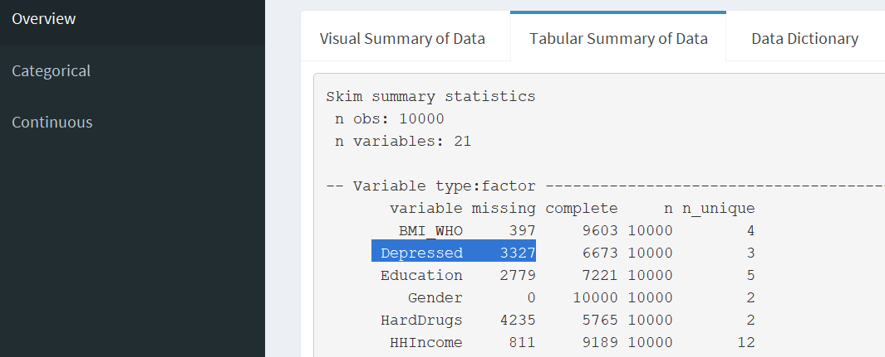

vignettes/data_scavenger_hunt.Rmd
data_scavenger_hunt.RmdA Data Scavenger Hunt is an activity that gets people to explore data. The burro app serves as a simple entry point to exploring the data.
There are multiple key elements of data scavenger hunts:
We highly recommend having a Code of Conduct for these sessions.
This is the most important part!
Check out Building a burro app on how to build your app.
We’re going to use the NHANES (National Health and Nutrition Examination Survey) dataset package as our dataset. Check out the burro app here: http://tladeras.shinyapps.io/nhanes_explore
install.packages("NHANES")
Load it up and take a look at the documentation for this dataset:
Divide the students up into groups of around 3-5 people. Each of the students should have a laptop, or they can share.
Give them a quick guided tour of the app, and give them a handout that maps types of questions to the different tabs/panels of the app.
The research question will focus the exploration of the data by deciding an outcome. For the NHANES data, we want to focus on Depression. In the NHANES dataset, Depression is represented as the Depressed variable.
So our research question is: “What are the potential covariates that are associated with Depression?”
In designing the questions you will use in the scavenger hunt, you should do some prework and explore the dataset. This will inform your questions that you ask participants to look for.
Try and map the complexity of the questions to the three menu items: overview, categorical, continuous.
Depressed Variable defined?Depressed variable?Depressed?LittleInterest have? What do they represent?LittleInterest with Depressed?Assign the questions to each group. Each group is responsible for talking the following:
Overall question: How many missing values are there for depressed?
Answer: Under Overview >> Tabluar summary of data, we can see the number of missing values for the Depressed variable.

Answer: the Depressed variable.
Answer: there are 3327 patients with missing information.
Be flexible. You might not get through all of the questions. If a finding is interesting, discuss it more. Is there other evidence supporting a finding? Is it what you expected, or is it surprising?
How was the data collected? How does the data collection affect the structure of the data?